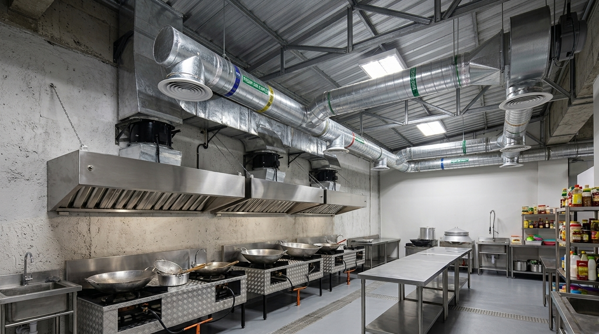

Mengoperasikan dapur komersial di area basement atau bawah tanah menghadirkan tantangan sirkulasi udara yang kompleks. Tanpa jendela dan ventilasi alami, suplai oksigen sangat bergantung pada sistem mekanis. Di sinilah sistem ducting fresh air memainkan peran krusial demi kesehatan koki dan kelancaran sirkulasi udara.
Sistem pembuangan (exhaust hood) yang kuat di dapur restoran akan terus menerus menarik udara keluar ruangan. Jika udara yang terbuang ini tidak digantikan oleh udara segar (make-up air atau fresh air), maka dapur akan mengalami masalah tekanan udara negatif ekstrem.
Risiko Dapur Basement Tanpa Fresh Air
Apa yang terjadi jika Anda hanya memasang blower exhaust tanpa menginstal ducting fresh air di area basement tertutup?
Kekurangan Oksigen (Hypoxia) Ringan
Staf dapur akan mudah merasa lelah, pusing, dan sesak napas karena asap sisa pembakaran (Karbon Monoksida/CO) menumpuk dan level oksigen (O2) terus menurun.
Kinerja Exhaust Menurun Drastis
Blower exhaust akan kesulitan menghisap asap karena udara di dalam ruangan sudah "habis". Akibatnya, asap masakan akan menyebar dan menggenangi seluruh ruangan dapur.
Masalah Pintu Sulit Dibuka
Tekanan udara negatif yang sangat kuat membuat ruang dapur bertindak seperti vakum, sehingga pintu akses sangat berat untuk dibuka atau ditutup dengan aman.

Bagaimana Sistem Fresh Air Bekerja?
Sistem fresh air bekerja berdampingan dengan exhaust system. Prinsip utamanya adalah menjaga keseimbangan tekanan udara (air balance). Idealnya, suplai fresh air disetel sekitar 80% - 90% dari total volume udara yang dibuang oleh exhaust.
Kenapa tidak 100%?
Dapur komersial memang dirancang untuk memiliki sedikit tekanan udara negatif (slight negative pressure) agar bau masakan dan asap tidak menyebar bocor ke area ruang makan tamu (dining area).
Solusi Desain Ducting Fresh Air
Dalam mendesain sistem fresh air untuk basement, beberapa hal teknis perlu diperhatikan:
Best Practices Pemasangan
- Titik Pengambilan Udara (Intake): Udara luar (outdoor) harus diambil dari lokasi yang bersih, jauh dari titik buang (discharge) exhaust, area parkir, atau tempat sampah.
- Filtrasi Udara: Unit fresh air (Make-Up Air Unit) harus dilengkapi filter untuk mencegah debu jalanan masuk ke dalam dapur.
- Arah Hembusan (Diffuser): Udara segar tidak boleh dihembuskan langsung ke arah kompor karena dapat mematikan atau mengganggu lidah api (pilot light).
Peringatan Keselamatan: Menurut standar K3, ruang kerja tertutup di basement wajib memiliki sirkulasi pergantian udara minimal (Air Changes per Hour / ACH) agar memenuhi syarat laik fungsi gedung.
Butuh Pemasangan Fresh Air Ducting?
Dapatkan sirkulasi udara dapur basement yang sehat, sejuk, dan aman.
Mengingat risikonya, investasi pada sistem Ducting Fresh Air bukanlah sekadar pelengkap, melainkan kewajiban teknis untuk menjaga produktivitas koki, mencegah kebakaran, dan menjamin operasional restoran basement berjalan lancar tanpa masalah keamanan udara.